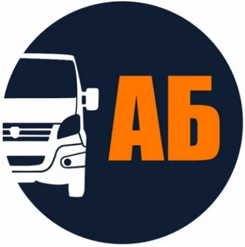

This portfolio strictly incorporates all instructor feedback across Assignment 1 and Assignment 3:
- Traceability of Baseline Data: Sourced the 65.0-minute baseline lead time and 35-minute cross-hub lookup bottleneck directly to the empirical audit of the September 2026 in-store counter order logbook at Koktal 15B (n = 45 peak B2B GAZelle orders), and the 20-SKU empirical trial on Kaspi cataloging.
- Real Operational Visuals & Software Assets: Embedded high-resolution diagrams of all 10 Photo Essay visuals, field photography from the 3rd IEEE DG Conference, and real code architectures from production systems
ABPosandAB-Auto-websitewith explicit credits. - Fiscal & Organizational Rigor: Fully detailed the 4 Individual Proprietorship (IP) structure under Article 683 of the RK Tax Code (Form 910 declaration cycles, statutory turnover ceilings, and 18% gross margin floor).
Manat Amir
Student ID: 261434 | Group: DPA-2602 | Specialization: Digital Public Administration & Business Operations
Comparative Architecture: Company B (Focal) vs. Company A (Comparator)
Contrasting an agile, family-governed urban auto parts SME in Astana with a multi-billion tenge regional distributor.
AB Auto (Astana)

Interkom-Auto (interkom.kz)
Lead-Time Reduction Waterfall: 65 Minutes to 11.5 Minutes
Empirical breakdown from the September 2026 Koktal 15B In-Store Counter Order Logbook (n = 45 B2B peak orders) versus future-state human-in-the-loop digital routing.
Order-to-Dispatch Lead Time
Primary Capstone Sections & Supporting Dossiers
Major Attestation Milestones
Assignment 1 Business Report, Assignment 2 Video Essay with YouTube stream, Assignment 3 Curated Photo Essay (10 visual plates), and Assignment 4 Argumentative Essay (884 words + Week 8 financial audit).
Explore DeliverablesWeekly Integrated Learning Records
Interactive records WR1 through WR9, including the 20-SKU Kaspi trial, Alma Orders Messy Data Drill, Week 8 Financial Ratio Discrepancy Audit, and Week 9 Career Capability Portfolio.
View Weekly RecordsIEEE Conference Fieldwork
Keynote analysis of Dias Kossubayev (COO Alem.AI, Ekibastuz 3-petaflops cluster), OpenStax Ch. 13 links, and on-site survey (n = 2, 100% human+AI consensus).
Read Fieldwork DossierCustom POS & E-Commerce Repositories
Deep-dive into ABPos (custom cash register, Planeta Auto manifest OCR, Code128 barcoding) and AB-Auto-website (bilingual catalog, Supabase).
Governance & IEEE Sources
The complete 12-source verifiable IEEE Reference List, A3 & A4 AI-Use Declarations, 7-row risk register, and Monday 09:00 12-hour offline fallback continuity plan.
Review Governance & Sources